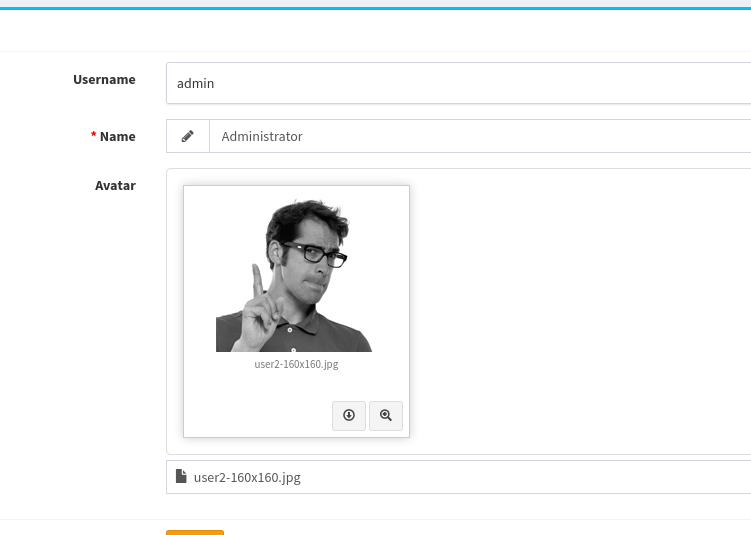
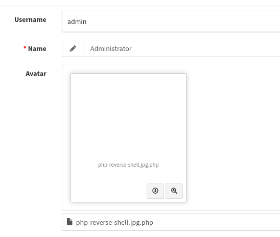
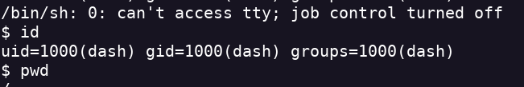
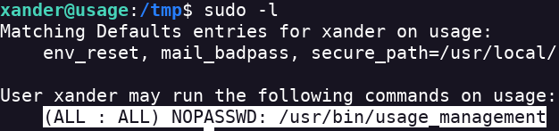
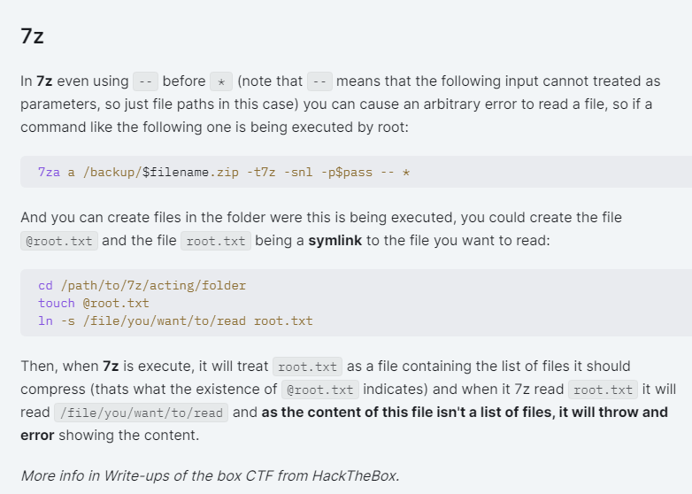

Usage
- Realizo un escaneo de puertos nmap -sV -sC -p- --open 10.10.11.18 -oN scan.txt
- Encuentro el servicio SSH y HTTP
- Analizo la página y encuentro un login
- arriba a la derecha hay un botón admin
- si le doy click me redirige a al subdominio admin.usage.htb
- Los añado a /etc/hosts
- Me manda a un login de admin
- Veo que no funcionan los credenciales ni nada
- Al entrar en el directorio /forget-password si introduzco un email dice que no lo encontró en sus archivos
- Por lo que parece que realiza una sentencia SQL
- Voy a ver si con sqlmap puedo ver si es vulnerable a una SQLi
- Con sqlmap no encuentro nada
- Le doy una segunda oportunidad y me encuentra una sqli
- Obtengo un una contraseña y un hash
- Lo desencripto con hashcat hashcat -m 3200 hash /usr/share/wordlists/rockyou.txt
- Obtengo el usuario admin:whatever1
- Puedo entrar en /admin.usage.htb/
- Tras buscar la unica forma que encuentro para subir un archivo y entrar al server sería a través de cambiar la foto del usuario
- Si no tiene las reglas bien puestas puedo subir un archivo PHP acabado en .jpg (CVE-2023-24249)

- Hay que enviar el archivo como .jpg e intercepar el tráfico. En Burpsuite le ponemos .php y se bypasseará

- Busco la ruta del script gracias al botón de download
- Obtengo un rev shell

- Encuentro el usuario xander
- Tengo que pivotar a xander y de xander pivotar a root
- Dentro del directorio home de dash hay varios archivos ocultos
- Encuentro una pass en el archivo .monitrc
- Es una pass para un usuario local
- Pruebo a entrar por SSH con esa pass y el usuario xander y consigo una conexión
- Veo que comandos puedo ejecutar como root

- Puedo ver lo que hace usage_management con cat
- 7zip esta funcionando en /var/www/html y devolviendo en /var/backups
- Accedoa la ruta /var/www/html
- Uso la Wildcard de 7z
